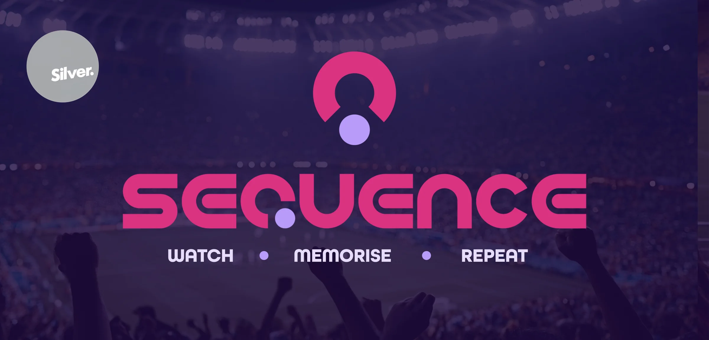
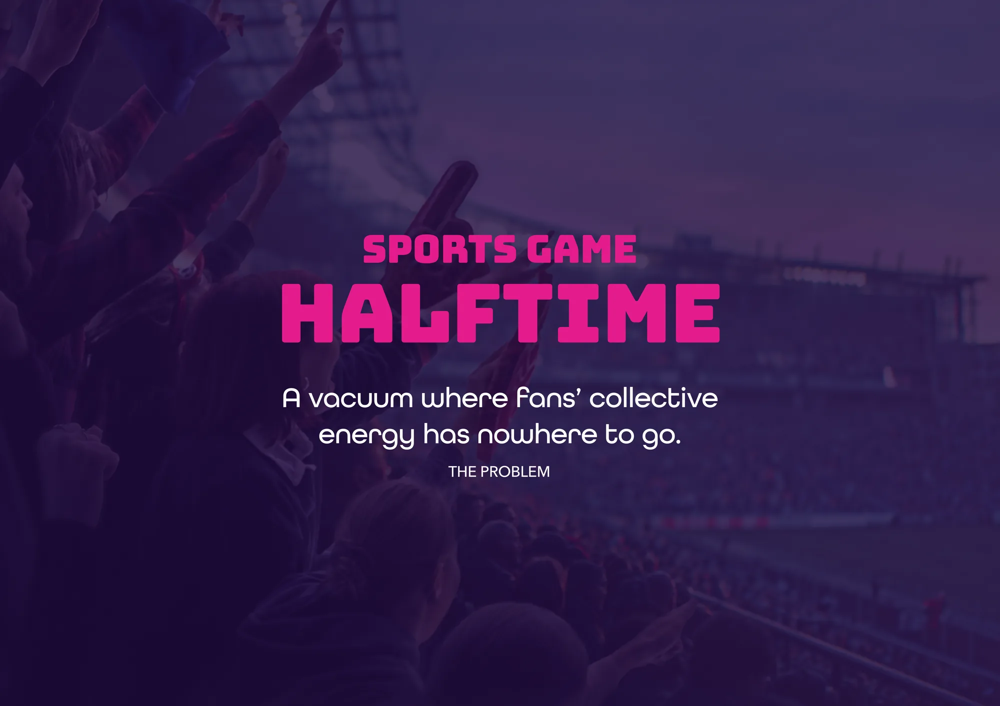
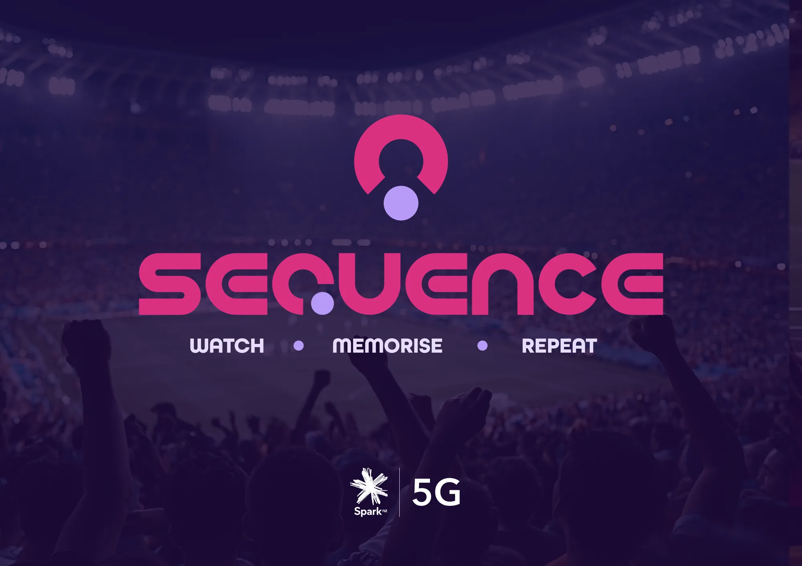
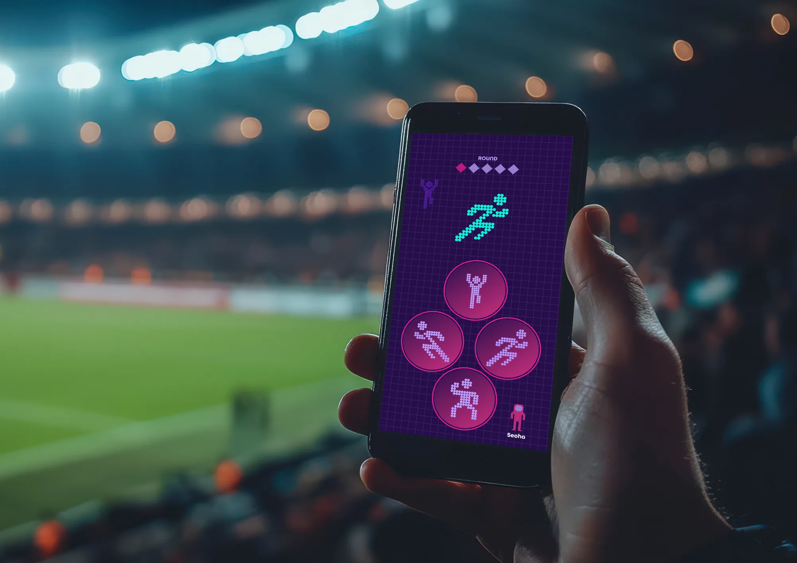
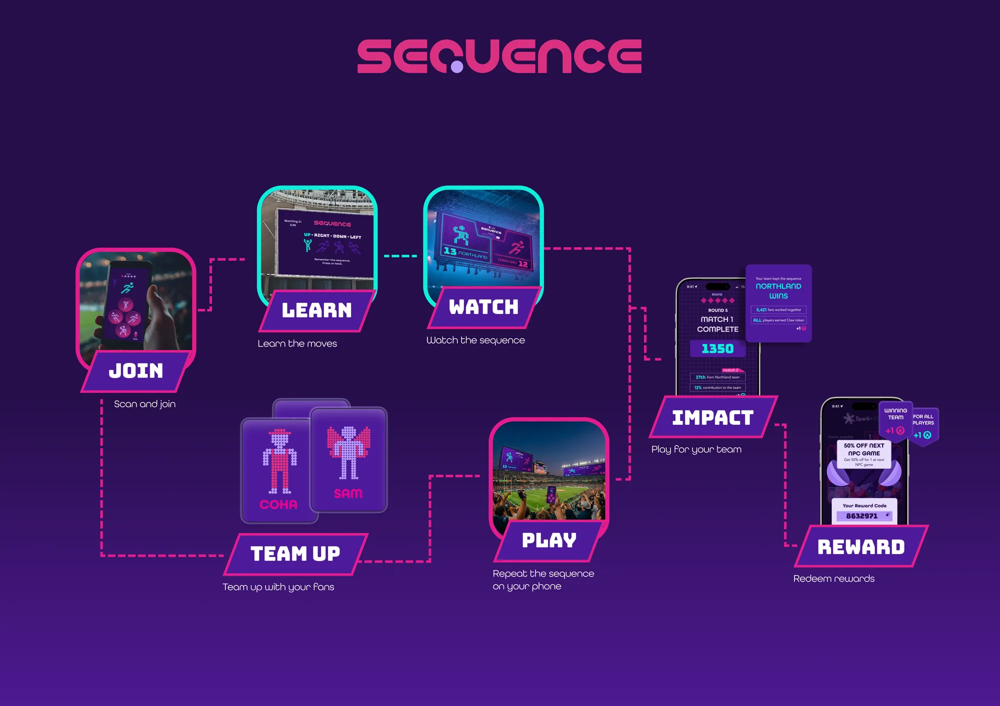
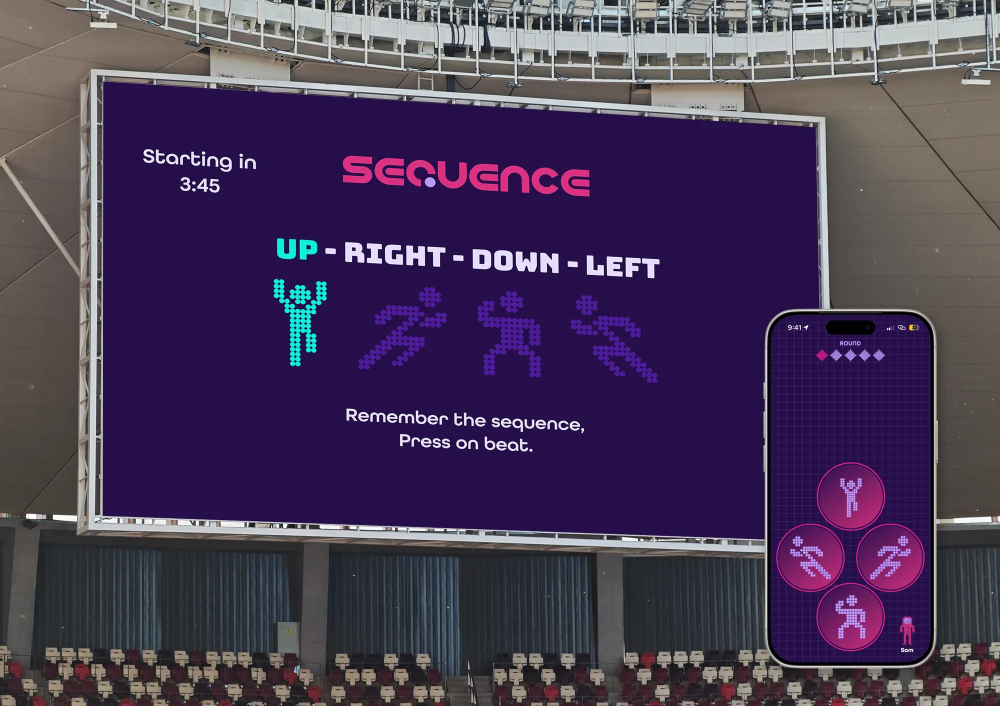
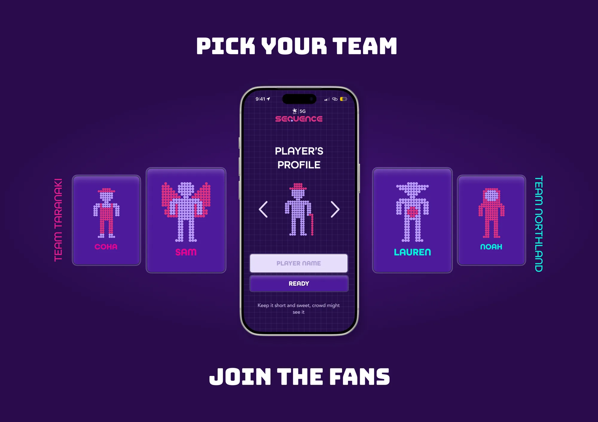
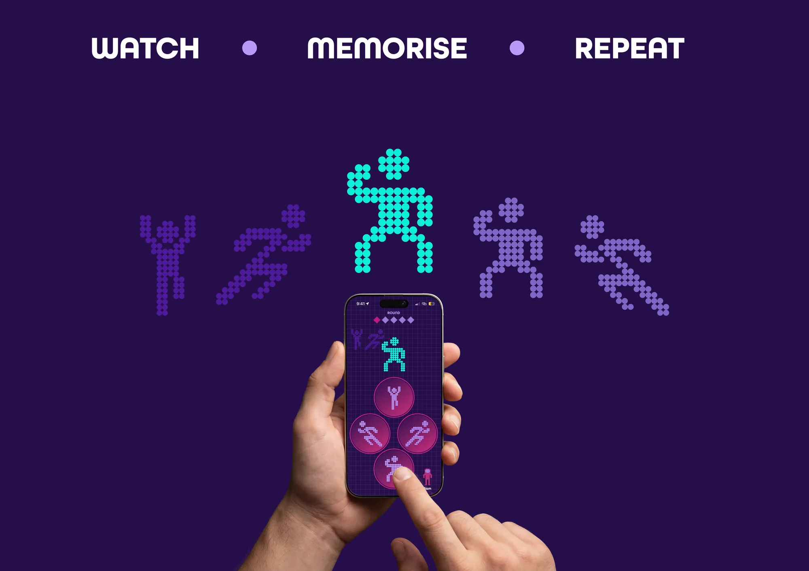
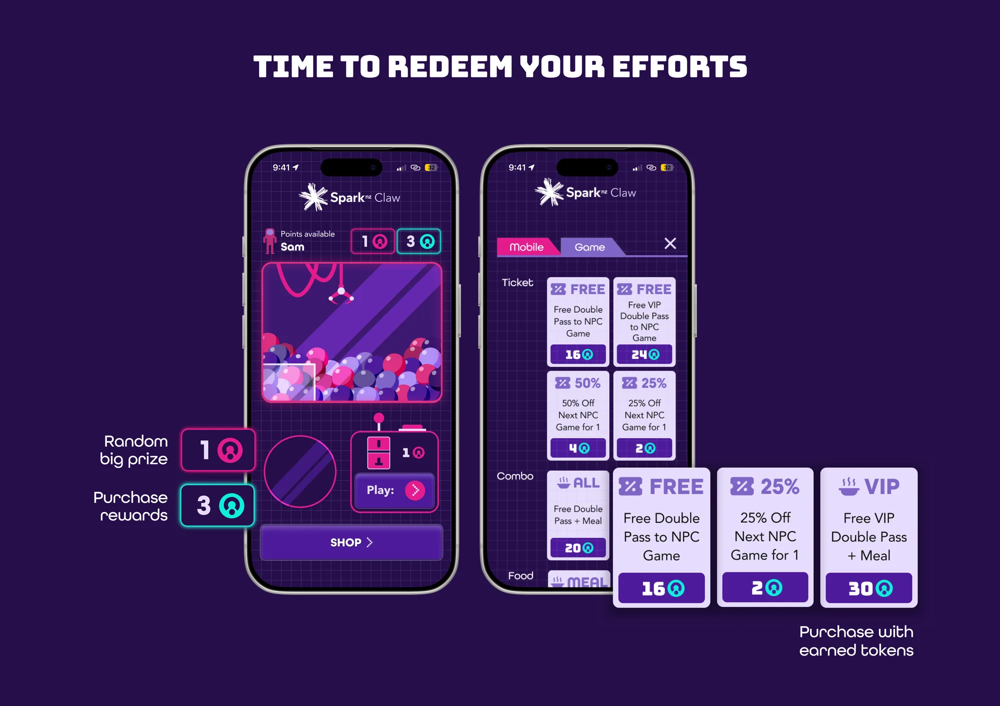
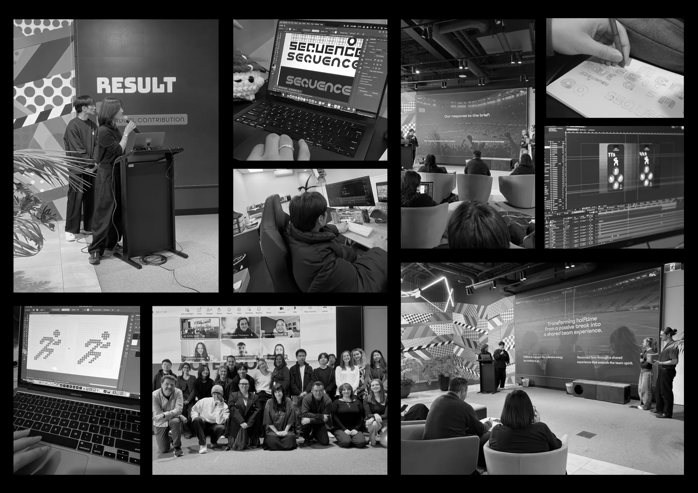

Sequence
A halftime game that brings thousands of fans together, turning a wasted break into a moment of joyful, collective play.
01 — Problem
Halftime is a vacuum where fans’ collective energy has nowhere to go.
For a whole half, thousands of fans share the same joy, despair and excitement. Then the whistle blows, everyone drifts off to their phones and the food queue, and that energy loses direction.

02 — Idea
Reunite the crowd, with the phone already in every hand as the controller.
[Join] A QR code on the big screen lets fans join from their seats.
[Watch] The screen shows a rapid sequence of moves to memorise.
[Repeat] Fans repeat it on their phones, on the beat, for their team.



Scan in, team up, learn the moves, watch the sequence, play it back, see your impact on the team, then redeem rewards.
03 — Two screens
The phone gives instant feedback and control. The stadium screen is the shared focus for progress, rivalry and celebration.
The mechanics stay simple so the game is inclusive, approachable and repeatable in a loud, busy stadium.
Team against team carries the first half’s rivalry through the break and into the second half.




04 — Behind the scenes

From logotype sketches and pixel figures to motion and the final pitch.